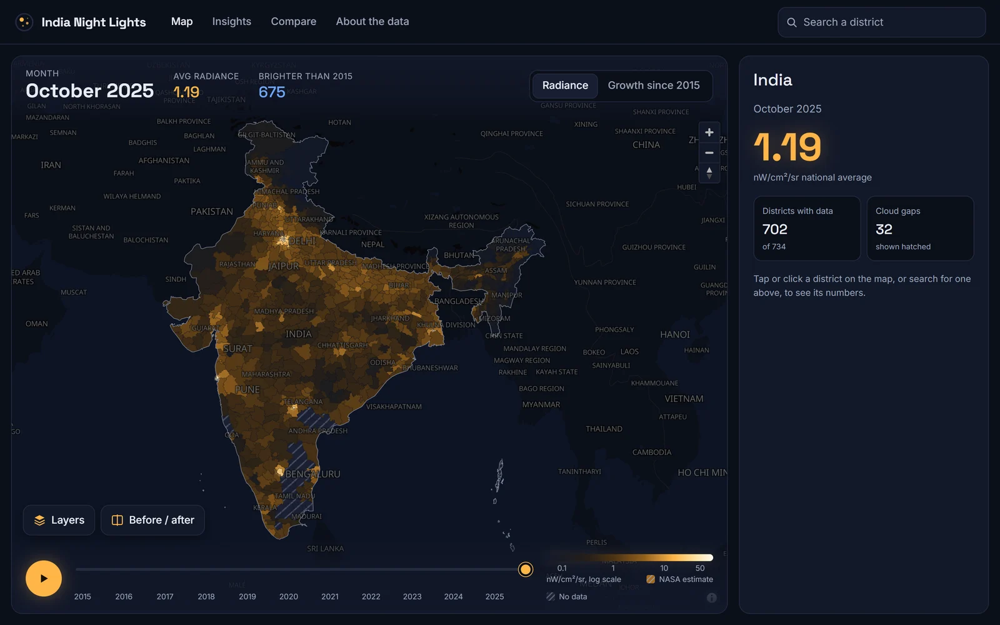
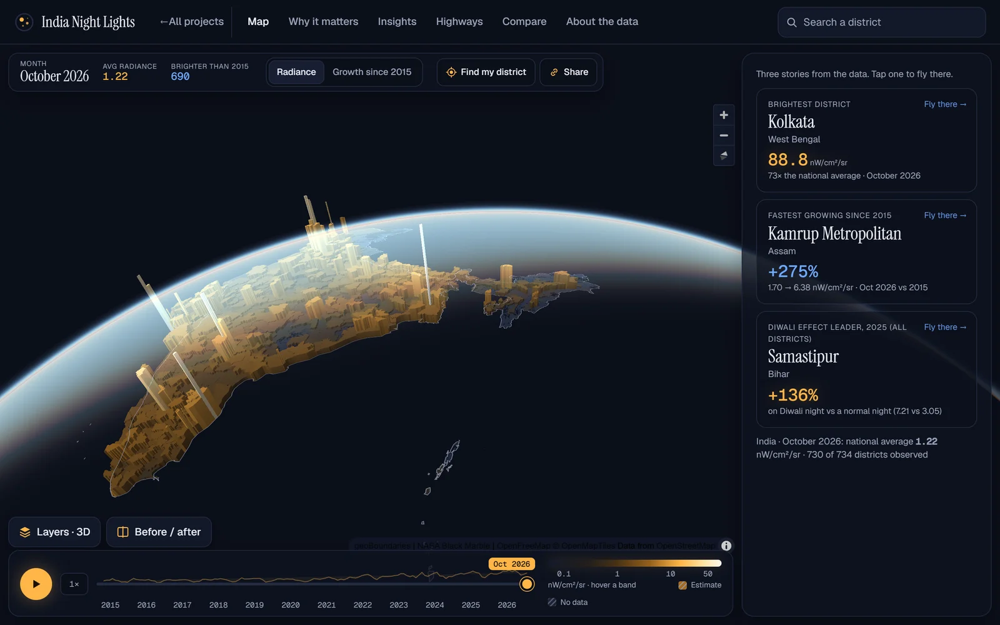
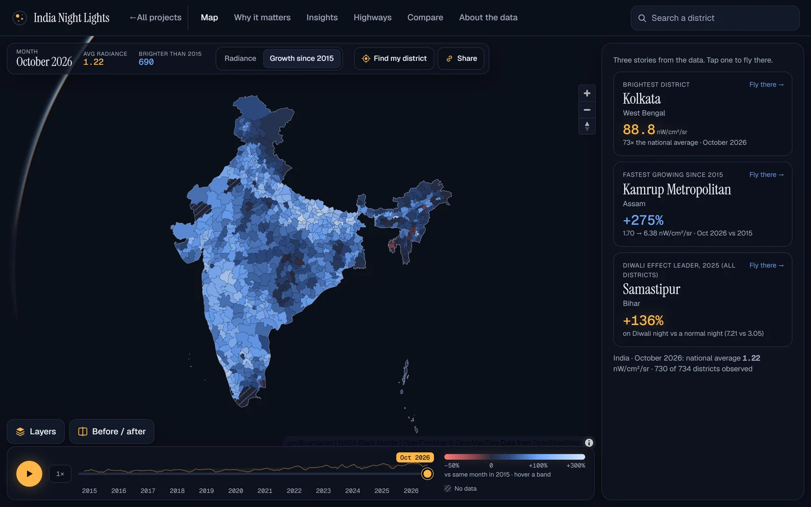
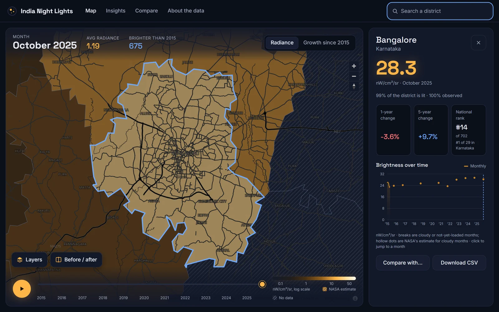
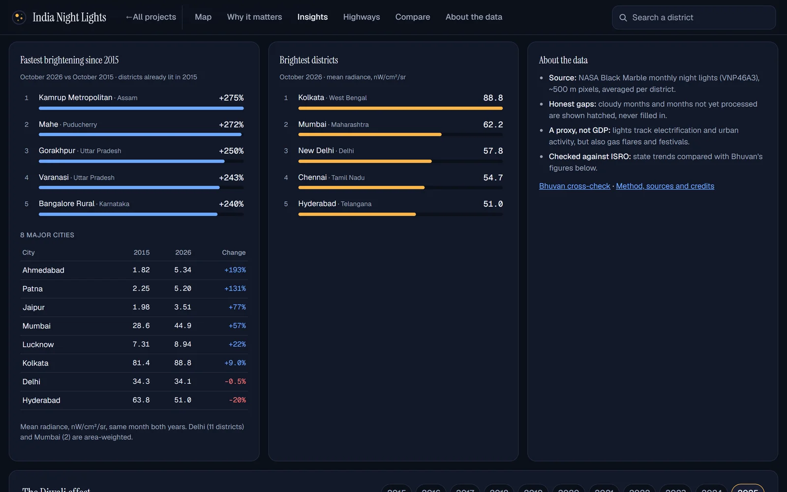
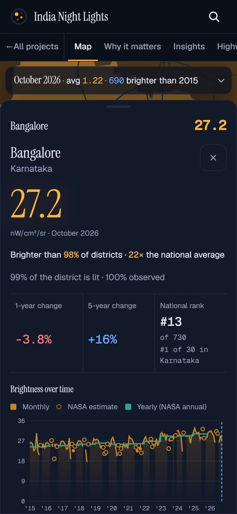

Side project · 2026
India Night Lights: India's growth, seen from space

Context
Night-time brightness is one of the few growth signals available for every district, every month. But NASA's data comes as about 1 GB of raw files per month, which only GIS specialists can use.
What I did
- Wrote a Python pipeline that downloads NASA Black Marble data and works out stats for each of India's 735 districts.
- Built a web app that runs on static files only (React, TypeScript, MapLibre), hosted on GitHub Pages with no backend.
- Features: a time slider with Play through every month since 2015, a Radiance / Growth toggle, a 3D lights skyline, a before/after swipe, district search that knows common names, a side panel with ranks and a trend chart, Compare, Insights, the Diwali effect and a cross-check against ISRO Bhuvan.
- Set up a monthly GitHub Action that processes new months and redeploys the site.
Results
735districts mapped
Monthlydata since 2015
~375 KBfirst load
₹0per month to run
Product decisions
- Show cloudy months as hatched gaps, not guessed values – NASA fills cloudy pixels from past data. I drop those, and a district under 50% observed is hatched, never estimated.
- Growth list only counts districts already lit in 2015 – otherwise near-dark districts top the list at +500%.
- Free stack with no backend – static files on GitHub Pages cost nothing and need no upkeep. The web data stays under 5 MB.
- District boundaries pinned to one release – so automated monthly refreshes can never change district IDs.
How it works
- NASA satellite dataBlack Marble night lights (monthly, yearly, daily) and district boundaries.
- Python pipelineWorks out stats for each district and drops gap-filled pixels. Raw files never reach the repo.
- Small static data filesA district map file, monthly figures and a few more. Under 5 MB in total.
- Web mapReact and MapLibre on GitHub Pages. The browser reads the files directly.
A GitHub Action runs on the 18th of every month: it processes new NASA months, commits the small output files and redeploys the site.
Gallery





On phones the side panel becomes a bottom sheet, with the same numbers and trend chart.
Caveat: night lights are a proxy, not GDP. Gas flares, fishing fleets and festivals light up too.